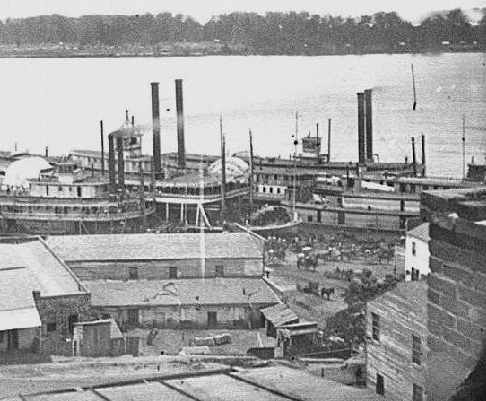
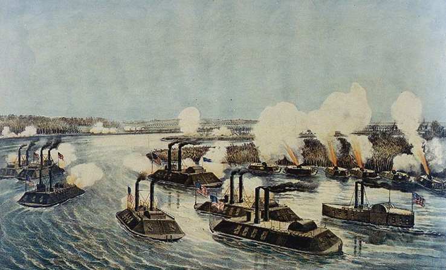
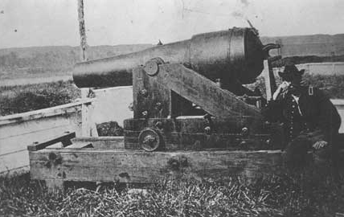

|
Abraham Lincoln, hearing the news of the July 4, 1863,
surrender of Vicksburg, Mississippi, to Union forces,
exclaimed: "The father of waters again goes unvexed to the
seas!" The loss of Vicksburg, and with it, the control of
250 miles of the Mississippi River to Port Hudson,
Louisiana, was a huge blow to the fledgling southern nation.
Vicksburg was a vital economic and military link between the
|

Vicksburg was one of the South's most important
and busy ports at the start of the Civil War.
|
Confederacy and its western states of Louisiana, Arkansas
and Texas. History records Major-General Ulysses S. Grant's
strategy to capture the "Gibraltar of the West" one of the
greatest military campaigns of all time.
In 1861 Vicksburg had a population of five thousand,
making it the second largest city in the state. Crisscrossed
with narrow, twisting streets, Vicksburg was a bustling
commercial center and transportation network for the planter
class of Mississippi and Louisiana. Like Natchez, its down
river sister, Vicksburg's wharves teemed with riverboats
loaded with cotton and passengers headed for New Orleans.
Vicksburg was a railroad hub as well, with lines going east
to the state capital, Jackson. "Vicksburg is the key,"
President Lincoln argued, "This war can never be brought to
a close until the key is in our pocket." The president of
the Confederacy, Jefferson Davis, whose plantation was near
Vicksburg, agreed that the citadel city was the "key," but
he clearly wanted to keep it in the southern pocket.
Vicksburg's role was defined early. A major strategic
goal of the Union's war effort was to gain control of the
Mississippi River from Illinois to the Gulf of Mexico.
Necessarily, the Confederates' war aims were geared toward
protecting the river and the surrounding southern territory
against Federal invasion. Early on, Union armies in the west
were successful in using a combination of naval and infantry
forces to gain control of the upper part of the river from
Illinois to just north of Vicksburg, and the lower
Mississippi River, from New Orleans to just south of Port
Hudson, Louisiana. Recognizing that the Confederacy must
guarantee that the remaining large portion of the river
remain open to traffic, Southerners poured their energies
into making Vicksburg an "impregnable fortress."
In May of 1862, southern forces occupied Vicksburg and
began a yearlong project of fortifying the city against
Union invasion. In many ways, Vicksburg was naturally well
protected due to its unique geographical position. Perched
on bluffs over two hundred feet above the Mississippi River,
|

The Union Navy expended massive amounts
of resources in their efforts to take control of Vicksburg.
|
Vicksburg was practically unassailable from the water.
Defenders made sure of that when they placed one hundred
cannons along a nine-mile ridge. From that ridge, the
Confederates controlled the river for more than thirty
miles. Attack from land would be almost as difficult. Miles
of swamps, thickets, bayous and rivers bordered Vicksburg
from both north and south. The only way to assault Vicksburg
by land was from the east, and in 1862 middle Mississippi
was firmly under southern control. Taking no chances,
however, Rebels built strong defenses protecting their most
vulnerable part. For nine miles east of the city confederate
engineers constructed a series of watchtowers with walls up
to twenty feet thick overlooking gullies and hollows. Along
this line one hundred and fifteen cannons were placed.
Trenches and rifle pits were dug to protect both cannons and
soldiers. Well before the final trench was dug, however,
Vicksburg's position was challenged.
In late May and early June 1862 Union naval gunboats
under the command of Admiral David Glasgow Farragut began
bombardment of the city. The cannons on the high bluffs
overlooking the river fired on northern ships and Farragut,
realizing he was overmatched, withdrew. Throughout the
summer other attempts were made to attack Vicksburg, all to
no avail. Both sides realized that a massive show of force
by the Union Army was coming, and soon. In October,
Confederate Major-General John C. Pemberton was appointed
commander of Mississippi and eastern Louisiana. The
Pennsylvania-born Pemberton, a West-Pointer and career
military officer married a Virginian and cast his lot with
the Confederacy in 1861. Pemberton felt confident that his
army of thirty thousand would defend ably the fortress above
the Mississippi.
On November 2, 1862, Major General Ulysses S. Grant,
victor of the battles of Fort Henry and Donelson (which
opened the South to invasion via the Mississippi) and the
Battle of Shiloh, began a campaign to capture Vicksburg. He
moved his army south from Grand Junction, Tennessee, along
the lines of the Mississippi Central Railroad. His immediate
destination for the thirty thousand strong Army of the
Tennessee was Holly Springs, Mississippi. Grant ordered
Major-General William T. Sherman to detach a part of his
force and attack Vicksburg from the north. Both forces would
converge on Vicksburg at the same time from different
directions. It was a good idea that failed miserably.
Confederate cavalry destroyed Grant's supply base at Holly
Springs, on December 20, and he lost contact with Sherman. A
week later, Sherman's thirty-two thousand men were
decisively repulsed at the battle of Chickasaw Bayou.
Grant retreated back to Memphis, Tennessee, in January of
1863 to re-conceptualize his campaign. He went downriver
again, and put his soldiers to work on building canals and
other river projects. Hopefully, a water route could be
opened that would allow his army to avoid the killing fire
of the Vicksburg cannons and get on dry ground either south
or east of the city. Months went by, and all the projects
ended in frustration. "Grant has no plan for taking
Vicksburg," one critic wrote Washington, D.C., "He is
frittering away time and strength to no purpose." Even his
ablest generals agreed. Heavy criticism was leveled at Grant
from many sides, but a worried Lincoln remained steadfast in
his support.
Finally, Grant came up with a successful operation in
March and April of 1863. His plan was simple, bold and
ingenious. With the help of Admiral David Dixon Porter,
commander of Union naval forces in the region, Grant marched
his army down the west side of the Mississippi below
Vicksburg. Porters' boats and transports, having earlier
braved successfully the Vicksburg batteries, transported two
of Grant's three corps safely across the river. Sherman was
ordered to stay behind and make a false attack on Vicksburg
to confuse Pemberton, and Pemberton's commanding general,

The 8th Wisconsin Infantry provided
valuable service during the Vicksburg campaign. Here several members
are shown outside the city with the unit's mascot, the eagle
"Old Abe."
|
Joseph E. Johnston, headquartered in Jackson, as to Grant's
real intentions. As soon as all of Grant's army was across
the river, Sherman rejoined the main force.
Simultaneously, Grant ordered a young Union cavalry
commander Colonel Benjamin H. Grierson, a former music
teacher from Illinois, to take 1700 horsemen on a
diversionary raiding party across middle Mississippi.
Grierson, riding hard from southwestern Tennessee,
accomplished everything Grant asked for in his sixteen-day,
six hundred mile raid in April. Fifty miles of railroad
track were destroyed, confederate communications seriously
disrupted, five hundred Rebel prisoners taken, southern
generals confused and civilians up in arms.
On May 1, the main Federal army was on the eastern side
of the Mississippi. Grant was on the march, and cut off from
his supply base. Others fretted, but he decided to "carry
what rations of hard bread, coffee, and salt we can and make
the country furnish the balance." The next two and a half
weeks saw Grant's army moving swiftly west and then east
again, engaging and defeating two Confederate armies
(Pemberton's and Johnston's) at Port Gibson, Raymond,
Jackson (the state capital), Champion's Hill, and Big Black
River. The Federal soldiers' morale was high. In seventeen
days they had marched 180 miles and won five battles. The
Union's casualty rate was costly at 4,300, but lower than
the Confederates at 7,200. The defeat at Big Black sent
Pemberton and his weary men scurrying back for the safety of
the fortified city. By noon of May 19th the Federals had
arrived at Vicksburg in force, and Grant, convinced that his
men could take the city easily, ordered the first of two
frontal assaults. Both were unsuccessful, and Grant settled
in for the long siege that he had hoped to avoid.
From the military point of view a siege means the desire
to capture a fortified position to gain territory. For
Grant, this meant putting his men to work digging trenches
until the nine miles of Confederation fortifications behind
Vicksburg were encircled by twelve miles of Union
earthworks. By June the Union army was not only well
entrenched but enlarged greatly. Grant had roughly 75,000
men to deploy with more arriving daily. Additionally, a
steel wall of rifles and cannons ringed the increasingly
beleaguered city, and the latter boomed all day and all
night. General Pemberton, believing that help in the form of
General Johnston and his troops would arrive at any time,
vowed never to give up. Because all supply lines into
Vicksburg were cut, and communication difficult, Pemberton
did not receive Johnston's message of June 15 in which he
warned Pemberton to escape with his army intact, as saving
Vicksburg was hopeless.
From the civilian point of view a siege means possible
starvation and certain disruption of life and destruction of
property. Three thousand citizens and thirty thousand
soldiers were trapped and desperate. For almost six weeks,
through the terrible heat of late May and June the mostly
women and children of Vicksburg endured dwindling food and
water supplies with great courage and spirit. Soon signs of
malnutrition appeared in the population. Mule meat and a few
handfuls of corn constituted a good day's diet for both
soldiers and civilians. Moreover, the constant and deadly
|

With the fall of Vicksburg, Union
troops captured the massive cannon that had harassed
their navy for so long.
|
rain of Federal artillery shells drove terrified families
out of their homes and into caves dug out of the hillsides
of Vicksburg. In the streets, houses, fences, trees, were
all destroyed for firewood if not obliterated by bombs. On
June 28 Pemberton received a letter signed by "Many
Soldiers," begging him to surrender if he would not see
everyone die of starvation. The soldiers by now were too
weak to even try to escape their prison. On July 3, Federal
soldiers near Confederate trenches claimed to see many white
flags flying, the classic sign of surrender. On that day,
General Pemberton met with Grant, and agreed to surrender
his army the next day.
The terms were generous. The Confederates, 27,230
enlisted men and 2,166 officers were given "paroles," or
pieces of paper signed by soldiers that allowed them to go
home if they promised not to take up arms against the Union
again. This meant that they would not be sent north to a
prison. Besides the surrender of the army, the Federals
captured 200 cannons and 60,000 small arms, so badly needed
by southern armies. The most important outcome by far was
that Vicksburg was captured, and on July 9 and the
Confederacy split in two when Port Hudson fell to Union
General Nathaniel P. Banks. Lincoln knew who deserved the
credit for this great and decisive victory for the North.
"Grant is my man," he said, "and I am his the rest of the
war." Shortly afterward, Grant was promoted to head the
Military Division of Mississippi, and Sherman at Grant's
request assumed Grant's former position as Commander of the
Western Department and head of the Army of the Tennessee.
"This was the most Glorious Fourth I ever spent,"
remembered one Union soldier. Indeed, July 4, 1863, was
widely celebrated in the North, and not just for the
surrender of Vicksburg, but also for the Union's win on the
far off fields of Gettysburg, Pennsylvania, on July 3.
Although almost two more years would pass before the war was
finally over, it was clear, as Grant wrote in his memoirs
"The fate of the Confederacy was sealed when Vicksburg
fell."
Source: Joan Waugh, ed., Facts on File Encyclopedia of American
History: Civil War and Reconstruction, 1856 to 1869 (New York: Facts on
File, 2003), 380-383.
|